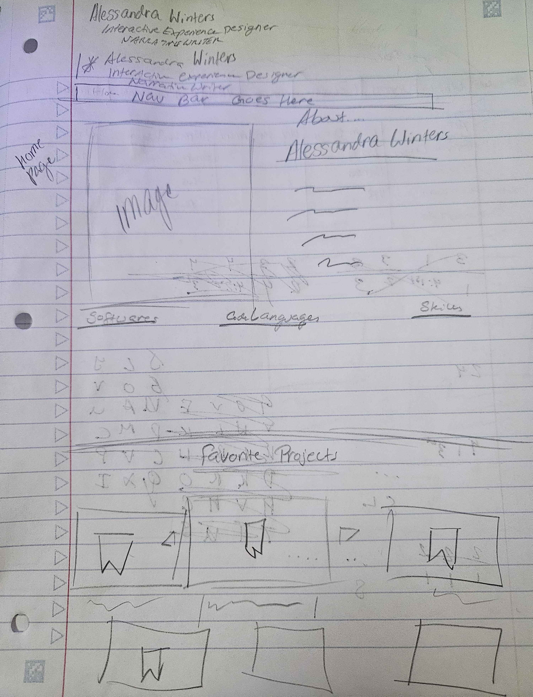
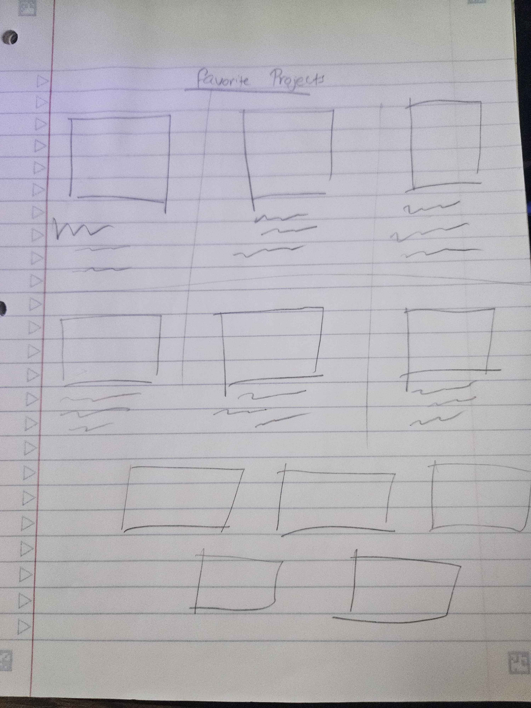

* My appologies! This Website is still underconstruction! Please Pardon the Chaos & Construction.
Portfolio Website Design Process
This Website is one of my most well planned projects. I wanted to make sure that it was able to show many of the skills I have learned over the years. Because I wanted to be able to include all my projects (even some of the less impressive or down right terrible ones) to show my growth and progression over the years, I spent a long time trying to figure out the best way to show off my work. It began with some sketches. A notebook and pencil-- I have found-- are great places to start when you don't know where to begin.
A picture of my initial personal contact information sketch for my website header
Once I had a list of the information I needed for people to contact me and understand what the site was supposed to be about, I still needed to figure out a way to lay out my personal information in a logical and user friendly way.
This is where sketches two & three came in.
| The left drawing shows the initial layout for my aboute me landing page. | The right drawing shows the initial layout for the favorite projects section of the page. |
|---|---|
|  |  |
The final step of sketching was laying out the menu and making sure all the parts were well organized. This included planning drop downs and deciding what the drop down options might be.
This sketch shows the initial layout of the nav bar.
Once the initial sketches were done and I had a visual in mind, I began building a mock-up design in figma. I chose to start in black and white to ensure that the quality of the page came first rather than the decorative aspect.
My initial figma mock-up of my website.